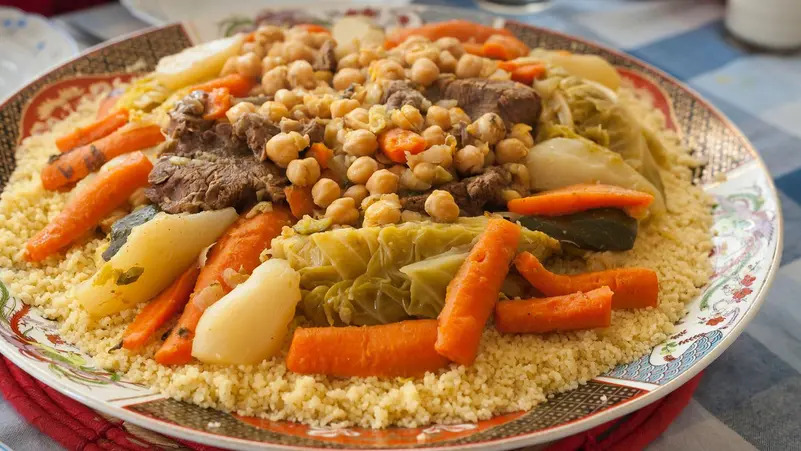

Algerian Couscous

"HEALTHY, FILLING, DELICIOUS, Life is worth living !"
An ancient cultural dish risen from the fallen kingdoms of morocco and algeria between the 11th and 13th century.
This combination of deep flavors will leave craving and asking for more servings !
Ingredients
- 3 cups water
- 2 cups couscous
- 1 tablespoon butter
- 3 tablespoons harissa
- ¼ cup olive oil, or more as needed, divided
- 8 mutton chops, fat removed
- 4 chicken drumsticks
- 1 pinch salt and ground black pepper to taste
- 3 onions, quartered
- water to cover
- 2 tablespoons ground turmeric
- 2 tablespoons ground cumin
- 2 tablespoons ground coriander
- 3 potatoes, cut into chunks
- 3 potatoes, cut into chunks
- 3 potatoes, cut into chunks
- 1 (6 ounce) can tomato paste
- 1 (7 ounce) can chickpeas, drained
- 2 courgette, sliced lengthwise and cut into chunks
- 5 coriander sprigs, chopped
Steps
-
Heat 3 tablespoons olive oil in a large pot over medium-high heat. Season mutton chops and chicken drumsticks
with salt and pepper; cook in batches with onions in the hot oil until browned, about 2 minutes per side.
Transfer to a large plate.
-
Scrape the bottom of the pot with a wooden spoon to release browned bits. Return mutton chops and chicken to the
pot. Pour in enough water to cover; add turmeric, cumin, and coriander. Cover and bring to a boil. Reduce heat
to medium; simmer for 20 minutes.
-
Stir potatoes, turnips, and carrots into the pot. Simmer, covered, until vegetables start to soften, about 10
minutes. Mix in tomato paste and cook for 10 minutes. Stir in chickpeas, zucchini, and cilantro;
continue cooking, covered, until zucchini is tender, about 5 minutes.
-
Bring 3 cups water to a boil in a saucepan; remove from heat and stir in couscous and butter. Cover saucepan and
let stand until water is absorbed completely, 5 to 10 minutes. Fluff couscous with a fork and stir in 1
tablespoon olive oil. Transfer to a serving dish.
-
Scoop vegetables onto a serving plate. Scoop mutton and chicken onto a separate plate. Serve alongside couscous,
harissa sauce, and remaining cooking liquid in the pot.